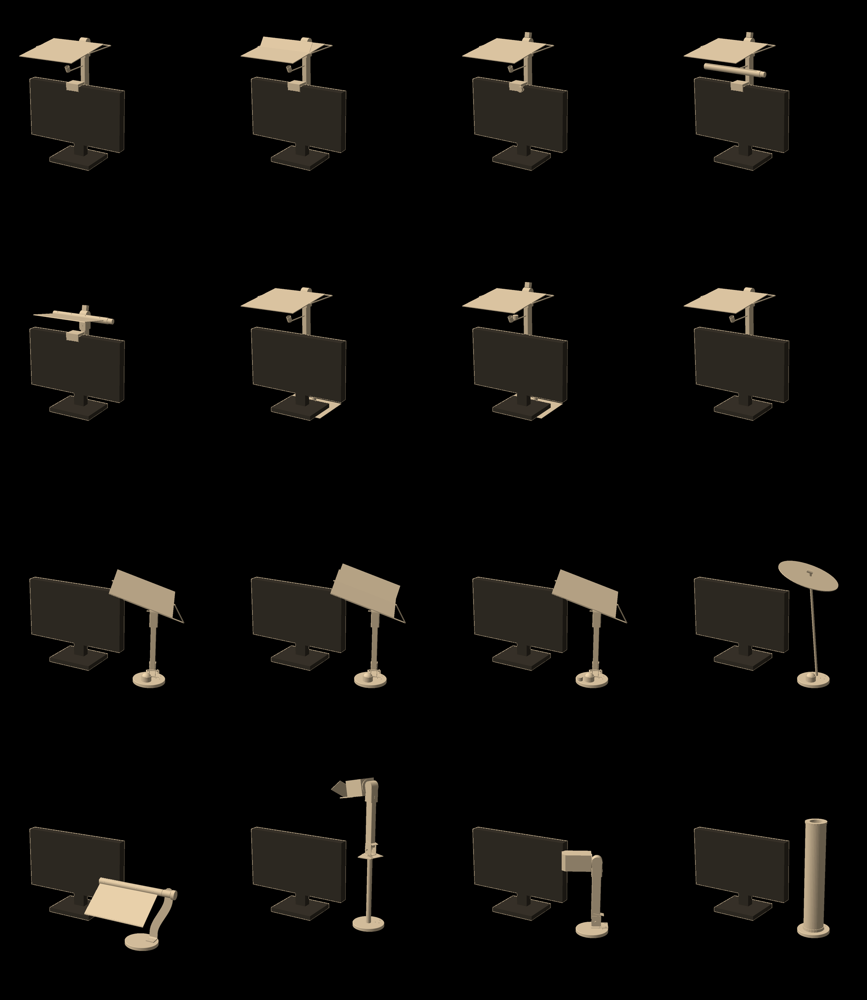

1 Klype · vipp
1,7 W · U0 0,47 · 16 lx
1,7 W · U0 0,47 · 16 lx
2 Klype · flik
3,6 W · U0 0,41 · 134 lx
3,6 W · U0 0,41 · 134 lx
3 Klype · vindauge
2,5 W · U0 0,47 · 106 lx
2,5 W · U0 0,47 · 106 lx
4 Klype · band
2,9 W · U0 0,70 · 132 lx
2,9 W · U0 0,70 · 132 lx
5 Klype · rute
4,0 W · U0 0,65 · 185 lx
4,0 W · U0 0,65 · 185 lx
6 Under · vipp
1,7 W · U0 0,47 · 16 lx
1,7 W · U0 0,47 · 16 lx
7 Under · vindauge
2,5 W · U0 0,47 · 106 lx
2,5 W · U0 0,47 · 106 lx
8 Vegg · vipp
1,7 W · U0 0,47 · 16 lx
1,7 W · U0 0,47 · 16 lx
9 Fot · vipp
1,7 W · U0 0,31 · 10 lx
1,7 W · U0 0,31 · 10 lx
10 Fot · knekk
2,8 W · U0 0,29 · 123 lx
2,8 W · U0 0,29 · 123 lx
11 Fot · vindauge
2,1 W · U0 0,31 · 26 lx
2,1 W · U0 0,31 · 26 lx
12 Fot · skive
2,4 W · U0 0,39 · 13 lx
2,4 W · U0 0,39 · 13 lx
13 Fot · rute
12,4 W · U0 0,07 · 84 lx
12,4 W · U0 0,07 · 84 lx
14 Fot · linse
5,8 W · U0 0,62 · 123 lx
5,8 W · U0 0,62 · 123 lx
15 Fot · hovud
2,4 W · U0 0,23 · 11 lx
2,4 W · U0 0,23 · 11 lx
16 Fot · røyr
24,4 W · U0 0,32 · 569 lx
24,4 W · U0 0,32 · 569 lx
Kropp 4 · Klype · band
2,9 Wfor 350 lx
0,70jamnheit
132 lxveggen bak
317cd/m² mot auget
Kva tala seier
01
Over skjermkanten slår fot. Jamnheita er 0,41 til 0,70 der, mot 0,29 til 0,39 for plata på fot.
02
LED-stripa i staden for éi diode løftar jamnheita frå 0,47 til 0,70, utan diffusorark på plata.
03
Vindaugsdioden held veggen lys utan at noko sveipar over skjermen: sprang 0,07, mot 0,37 når plata vippar.
04
Ruta på fot treng 12,4 W. Plata på fot held veggen med flik, men jamnheita blir 0,29, og ho veltar ved 1,9 N.
05
Kropp 4 fell på éin ting: 1143 g på skjermen. Armen og hengselet frå projektoren er 421 g av det.
A, B, C og D til samanlikning: 3,0, 3,6, 5,8 og 3,7 W, jamnheit 0,62, 0,41, 0,62 og 0,62.